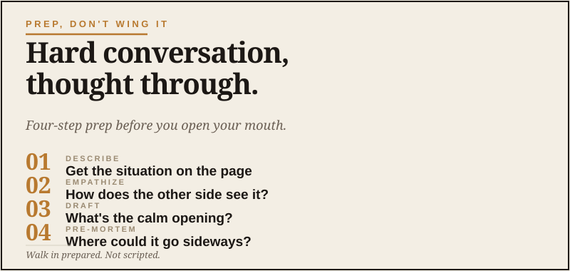

Prep, Don't Wing It
The conversation you've been putting off.

Every grown man has the conversation he’s been putting off. If you don’t think you have one, give it a minute. It’ll raise its hand.
The talk with the teenage kid about something that needs addressing but might damage trust. The email to the colleague who’s been doing something passive-aggressive. The conversation with the aging parent about giving up the car keys. The push-back to the boss who keeps assuming you’ll work the weekend. The hard talk with your spouse about money, sex, work, in-laws, retirement, or anything else hard to bring up at the kitchen table.
You know it needs to happen. You also know that if you wing it, you’re likely to come on too strong, too soft, or in a way that produces the opposite of what you actually wanted. As a husband, father, and someone who led people for a long time, I’ve learned that “I’ll just handle it in the moment” is not always the high-speed plan we think it is. So you put it off. Sometimes for months.
One of the genuinely useful things AI does for grown men is help with the prep work for these conversations. Not by writing the script. Not by replacing your judgment about your own family or relationships. By doing the thing most of us don’t do: actually thinking it through clearly, in writing, before we open our mouths.
The conversation goes badly when you walk into it without having actually thought about what you want to say. AI fixes that part — and just that part.
What AI is genuinely good for here
Three specific things, all of which most men skip when they’re heading into a hard conversation.
Naming what you actually want from the conversation. Most people walk into hard talks without being clear with themselves about what success would look like. The conversation goes off the rails because the goal was vague.
Anticipating how the other person might hear it. Words you intend one way often land another. AI is good at spotting where your phrasing might trigger defensiveness or shut someone down.
Pressure-testing your own framing. Sometimes you’ve been carrying a one-sided version of the situation in your head for so long that you’ve stopped seeing the other person’s reasonable perspective. A good AI conversation surfaces that.
The prep workflow
Here’s the actual sequence I’d use.
Step one: describe the situation
Just describing the situation honestly already does work. Reading it back, you often realize things you hadn’t articulated. The AI’s clarifying questions tend to surface what you’ve been avoiding.
Step two: think about the other person
This step is where most hard conversations get won or lost. Walking in having genuinely thought about the other person’s perspective changes how you show up.
Step three: draft the opening
You don’t have to use the AI’s exact words. Please don’t walk into the kitchen sounding like a corporate memo with shoes on. The point is to see what a thoughtful opening looks like, then translate it into how you actually talk.
Step four: think through what could go sideways
This is the prep that actually pays off in the moment. When something happens you didn’t expect, you’ve already thought about it. You have somewhere to go that isn’t just reacting.
The difference between hard talks and hard emails
For emails, AI is more directly useful. You can write the actual draft, ask AI to refine it, iterate until it lands the way you want, and send it.
For face-to-face conversations, AI doesn’t write the script — it helps you arrive prepared. Different tool, same principle: do the thinking work before the moment, not in the moment.
What AI absolutely cannot do for you here
It cannot make the conversation itself easier. The conversation is still hard. The other person’s reaction is still unpredictable. Your own emotions in the moment will still affect how you show up.
It cannot replace your judgment about your own people. You know your spouse, your kid, your parent, your colleague better than any tool. If the AI’s framing doesn’t feel right for them, trust your instinct.
It cannot heal the relationship. Conversations help, but the underlying patterns take real work over time. AI is the sharpening of the axe, not the chopping of the wood.
The thing this is actually about
Most grown men I know are pretty good at the operational parts of life — the work, the household, the logistics. The part where most of us are weakest is the relational. The hard conversations get put off. The emails get sent half-thought-through and badly. The chance to deepen a relationship gets traded for the avoidance of mild discomfort.
This isn’t a character flaw. It’s just that nobody taught us how to think clearly about hard conversations. We were taught how to think clearly about projects, plans, and problems. Conversations were supposed to come naturally.
They don’t, for most of us. Not the hard ones, anyway.
What AI offers — and this is the actual point — is the structured thinking layer that the hard ones really benefit from. Not as a replacement for your own judgment, but as the prep work that makes you show up better than you would have winging it.
That’s a meaningful gift to your relationships. Use it.